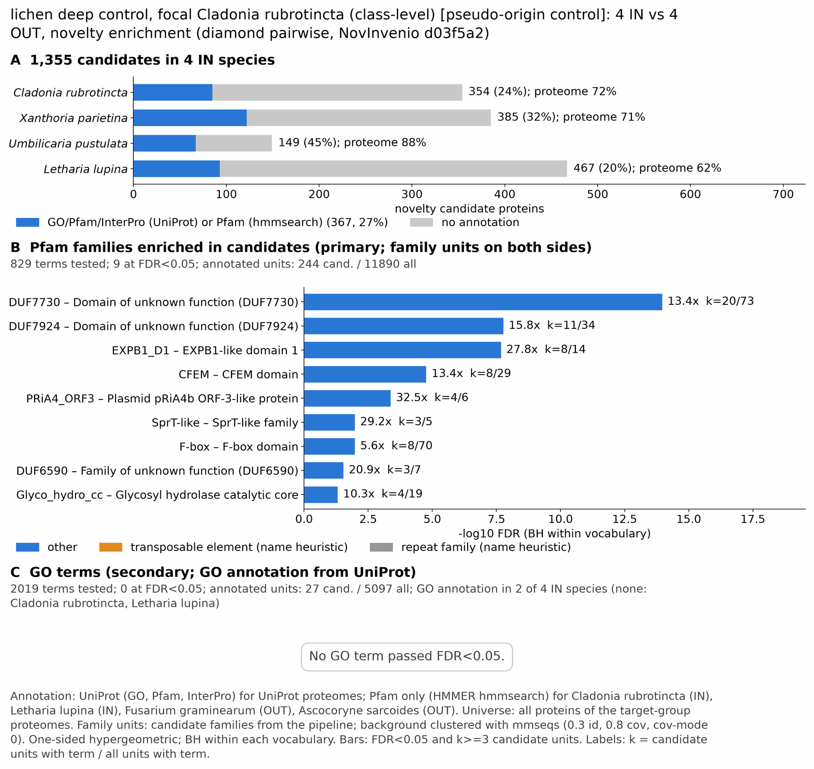

yc pseudo lichen: functional enrichment (novelty)
One-sided hypergeometric test per term; Benjamini-Hochberg FDR within each scope, level and vocabulary. Candidates are the novelty candidates: gene families present in the IN group and absent from the OUT group. Universe: proteome. Background clustered: True (40020 sequences in 20912 clusters, mmseqs easy-cluster --min-seq-id 0.3 -c 0.8). Family level: one unit per candidate family and per background cluster.
Sources: Pfam: 2026-01-27-Pfam38.2; InterPro entries: 110.0; GO: releases/2026-07-26; analysis generated 2026-10-25T08:47:22. Source tables: /bigdata/stajichlab/jstajich/projects/NovInvenio_Investigations/studies/fungi/yeast_convergence/yc_pseudo_lichen/analysis/enrichment/outputs/proteome_clustered.
Full record: PROVENANCE. Run report: report.html.
Related: yeast_convergence: comparison across contrasts
- Annotation provenance is not fully recorded: PROVENANCE.yaml lists the per-species annotation files and their checksums, but not the UniProt release they come from.
- GO results are secondary. GO annotations include computational evidence (IEA, IBA); the GO evidence column shows if a term has non-IEA support.
- Candidate families (pipeline clustering of candidates) and background clusters (mmseqs clustering of the background proteome) are made by different runs, so family-level counts are not fully comparable.
- Low annotation: the candidate set has less than 50% annotation for Pfam 22.3%, InterPro 14.0%, GO 2.1%, any vocabulary 27.1%. Enrichment for these vocabularies has low power.
- GO and InterPro cover only 2 of 4 species: Xantpari, Umbipust. No GO and InterPro annotation for Cladrubr, Lethlupi; these species add no units to the GO and InterPro tests, so those results describe the covered species only.
Summary figure

Annotation coverage
Fraction of proteins with at least one term per vocabulary. Universe = all proteins of the species; candidates = the candidate set.
| Species | Set | Proteins | Pfam | Pfam clan | InterPro | GO | Any |
|---|---|---|---|---|---|---|---|
| Cladrubr | universe | 10118 | 71.8% | 58.1% | 0.0% | 0.0% | 71.8% |
| Cladrubr | candidates | 354 | 24.0% | 19.8% | 0.0% | 0.0% | 24.0% |
| Xantpari | universe | 10643 | 65.7% | 52.3% | 71.1% | 7.5% | 71.3% |
| Xantpari | candidates | 385 | 19.7% | 13.5% | 31.7% | 0.0% | 31.7% |
| Umbipust | universe | 8265 | 81.7% | 68.7% | 87.3% | 65.2% | 87.7% |
| Umbipust | candidates | 149 | 32.2% | 22.1% | 45.0% | 18.8% | 45.0% |
| Lethlupi | universe | 12349 | 61.5% | 49.9% | 0.0% | 0.0% | 61.5% |
| Lethlupi | candidates | 467 | 19.9% | 15.6% | 0.0% | 0.0% | 19.9% |
| ALL_IN | universe | 41375 | 69.2% | 56.3% | 35.7% | 14.9% | 71.8% |
| ALL_IN | candidates | 1355 | 22.3% | 16.8% | 14.0% | 2.1% | 27.1% |
Tests summary
Per vocabulary: terms with FDR < 0.05 / terms tested. Protein level counts proteins; family level counts candidate families and background clusters.
| Scope | Level | Cand. units | Pfam sig / tested | Pfam clan sig / tested | InterPro sig / tested | GO sig / tested |
|---|---|---|---|---|---|---|
| whole_set | family | 1041 | 9 / 829 | 4 / 304 | 7 / 1163 | 0 / 2019 |
| whole_set | protein | 1355 | 15 / 1855 | 9 / 407 | 8 / 1840 | 0 / 2127 |
| Cladrubr | family | 340 | 3 / 439 | 3 / 224 | 0 / 0 (not_available_no_annotated_units) | 0 / 0 (not_available_no_annotated_units) |
| Cladrubr | protein | 354 | 4 / 489 | 3 / 240 | 0 / 0 (not_available_no_annotated_units) | 0 / 0 (not_available_no_annotated_units) |
| Lethlupi | family | 431 | 2 / 453 | 4 / 237 | 0 / 0 (not_available_no_annotated_units) | 0 / 0 (not_available_no_annotated_units) |
| Lethlupi | protein | 467 | 2 / 535 | 5 / 246 | 0 / 0 (not_available_no_annotated_units) | 0 / 0 (not_available_no_annotated_units) |
| Umbipust | family | 141 | 0 / 287 | 0 / 219 | 0 / 720 | 0 / 1984 |
| Umbipust | protein | 149 | 0 / 325 | 0 / 227 | 0 / 813 | 0 / 2049 |
| Xantpari | family | 374 | 1 / 317 | 1 / 228 | 3 / 765 | 0 / 0 (skipped_no_annotated_candidates) |
| Xantpari | protein | 385 | 1 / 362 | 1 / 236 | 4 / 868 | 0 / 0 (skipped_no_annotated_candidates) |
Top 25 Pfam terms (whole set, family level)
25 rows shown, ordered by FDR then p-value; 9 have FDR < 0.05 (bold).
| Term | Name | k / N cand. | n / M bg | Fold | FDR (BH) |
|---|---|---|---|---|---|
| PF24864 | DUF7730: Domain of unknown function (DUF7730) | 20 / 244 | 73 / 11890 | 13.351 | 1.09e-14 |
| PF25545 | DUF7924: Domain of unknown function (DUF7924) | 11 / 244 | 34 / 11890 | 15.765 | 1.70e-08 |
| PF22514 | EXPB1_D1: EXPB1-like domain 1 | 8 / 244 | 14 / 11890 | 27.845 | 2.09e-08 |
| PF05730 | CFEM: CFEM domain | 8 / 244 | 29 / 11890 | 13.443 | 1.72e-05 |
| PF07929 | PRiA4_ORF3: Plasmid pRiA4b ORF-3-like protein | 4 / 244 | 6 / 11890 | 32.486 | 4.17e-04 |
| PF10263 | SprT-like: SprT-like family | 3 / 244 | 5 / 11890 | 29.238 | 0.010 |
| PF00646 | F-box: F-box domain | 8 / 244 | 70 / 11890 | 5.569 | 0.010 |
| PF20233 | DUF6590: Family of unknown function (DUF6590) | 3 / 244 | 7 / 11890 | 20.884 | 0.029 |
| PF11790 | Glyco_hydro_cc: Glycosyl hydrolase catalytic core | 4 / 244 | 19 / 11890 | 10.259 | 0.048 |
| PF25485 | DUF7908: Domain of unknown function (DUF7908) | 3 / 244 | 10 / 11890 | 14.619 | 0.076 |
| PF00399 | PIR: Yeast PIR protein repeat | 3 / 244 | 11 / 11890 | 13.29 | 0.094 |
| PF00651 | BTB: BTB/POZ domain | 6 / 244 | 63 / 11890 | 4.641 | 0.124 |
| PF08100 | Dimerisation: O-methyltransferase dimerisation domain | 2 / 244 | 6 / 11890 | 16.243 | 0.380 |
| PF13813 | MBOAT_2: Membrane bound O-acyl transferase family | 2 / 244 | 7 / 11890 | 13.923 | 0.455 |
| PF13912 | zf-C2H2_6: C2H2-type zinc finger | 2 / 244 | 7 / 11890 | 13.923 | 0.455 |
| PF17111 | PigL_N: Pigment biosynthesis cluster protein PigL N-terminal | 4 / 244 | 45 / 11890 | 4.332 | 0.691 |
| PF25534 | DUF7918: Domain of unknown function (DUF7918) | 2 / 244 | 10 / 11890 | 9.746 | 0.826 |
| PF00202 | Aminotran_3: Aminotransferase class-III | 2 / 244 | 11 / 11890 | 8.86 | 0.940 |
| PF20237 | DUF6594: Family of unknown function (DUF6594) | 3 / 244 | 34 / 11890 | 4.3 | 1.000 |
| PF13472 | Lipase_GDSL_2: GDSL-like Lipase/Acylhydrolase family | 2 / 244 | 14 / 11890 | 6.961 | 1.000 |
| PF14497 | GST_C_3: Glutathione S-transferase, C-terminal domain | 2 / 244 | 14 / 11890 | 6.961 | 1.000 |
| PF19086 | Terpene_syn_C_2: Terpene synthase family 2, C-terminal metal binding | 2 / 244 | 14 / 11890 | 6.961 | 1.000 |
| PF00098 | zf-CCHC: Zinc knuckle | 3 / 244 | 35 / 11890 | 4.177 | 1.000 |
| PF12937 | F-box-like: F-box-like | 4 / 244 | 64 / 11890 | 3.046 | 1.000 |
| PF00043 | GST_C: Glutathione S-transferase, C-terminal domain | 2 / 244 | 17 / 11890 | 5.733 | 1.000 |
Top 25 InterPro terms (whole set, family level)
25 rows shown, ordered by FDR then p-value; 7 have FDR < 0.05 (bold).
| Term | Name | k / N cand. | n / M bg | Fold | FDR (BH) |
|---|---|---|---|---|---|
| IPR056632 | Domain:Domain of unknown function DUF7730 | 8 / 172 | 30 / 9405 | 14.581 | 3.57e-05 |
| IPR038883 | Family:Uncharacterized protein AN11006-like | 9 / 172 | 43 / 9405 | 11.445 | 3.57e-05 |
| IPR036908 | Homologous_superfamily:RlpA-like domain superfamily | 5 / 172 | 17 / 9405 | 16.082 | 0.003 |
| IPR024079 | Homologous_superfamily:Metallopeptidase, catalytic domain superfamily | 6 / 172 | 29 / 9405 | 11.313 | 0.003 |
| IPR008427 | Domain:Extracellular membrane protein, CFEM domain | 5 / 172 | 19 / 9405 | 14.39 | 0.004 |
| IPR012912 | Domain:Plasmid pRiA4b, Orf3-like domain | 3 / 172 | 5 / 9405 | 32.808 | 0.011 |
| IPR024047 | Homologous_superfamily:MM3350-like superfamily | 3 / 172 | 6 / 9405 | 27.34 | 0.019 |
| IPR037176 | Homologous_superfamily:Osmotin/thaumatin-like superfamily | 2 / 172 | 5 / 9405 | 21.872 | 0.437 |
| IPR057684 | Domain:Domain of unknown function DUF7924 | 3 / 172 | 17 / 9405 | 9.649 | 0.437 |
| IPR051694 | 3 / 172 | 18 / 9405 | 9.113 | 0.466 | |
| IPR023346 | Homologous_superfamily:Lysozyme-like domain superfamily | 2 / 172 | 6 / 9405 | 18.227 | 0.502 |
| IPR000420 | Repeat:Cell wall mannoprotein PIR repeat | 2 / 172 | 8 / 9405 | 13.67 | 0.629 |
| IPR008930 | Homologous_superfamily:Terpenoid cyclases/protein prenyltransferase alpha-alpha toroid | 2 / 172 | 8 / 9405 | 13.67 | 0.629 |
| IPR037151 | Homologous_superfamily:Alpha-ketoglutarate-dependent dioxygenase AlkB-like superfamily | 2 / 172 | 8 / 9405 | 13.67 | 0.629 |
| IPR051735 | 2 / 172 | 8 / 9405 | 13.67 | 0.629 | |
| IPR057678 | Domain:Domain of unknown function DUF7918 | 2 / 172 | 8 / 9405 | 13.67 | 0.629 |
| IPR024655 | Domain:Asl1-like, glycosyl hydrolase catalytic domain | 2 / 172 | 10 / 9405 | 10.936 | 0.878 |
| IPR053183 | 2 / 172 | 10 / 9405 | 10.936 | 0.878 | |
| IPR036265 | Homologous_superfamily:HIT-like superfamily | 2 / 172 | 12 / 9405 | 9.113 | 1.000 |
| IPR001810 | Domain:F-box domain | 4 / 172 | 58 / 9405 | 3.771 | 1.000 |
| IPR036514 | Homologous_superfamily:SGNH hydrolase superfamily | 2 / 172 | 15 / 9405 | 7.291 | 1.000 |
| IPR041698 | Domain:Methyltransferase domain 25 | 2 / 172 | 15 / 9405 | 7.291 | 1.000 |
| IPR002156 | Domain:Ribonuclease H domain | 2 / 172 | 16 / 9405 | 6.835 | 1.000 |
| IPR032675 | Homologous_superfamily:Leucine-rich repeat domain superfamily | 3 / 172 | 46 / 9405 | 3.566 | 1.000 |
| IPR033121 | Domain:Peptidase family A1 domain | 2 / 172 | 21 / 9405 | 5.208 | 1.000 |
Top 15 GO terms (whole set, family level) — secondary, computational evidence (IEA/IBA) included
15 rows shown, ordered by FDR then p-value; 0 have FDR < 0.05 (bold).
| Term | Name | k / N cand. | n / M bg | Fold | FDR (BH) | GO evidence | Families with non-IEA |
|---|---|---|---|---|---|---|---|
| GO:0005576 | cellular_component:extracellular region | 2 / 27 | 37 / 5097 | 10.204 | 1.000 | IEA_only | 0 |
| GO:0008237 | molecular_function:metallopeptidase activity | 2 / 27 | 43 / 5097 | 8.78 | 1.000 | IEA_only | 0 |
| GO:0016774 | molecular_function:phosphotransferase activity, carboxyl group as acceptor | 1 / 27 | 5 / 5097 | 37.756 | 1.000 | IEA_only | 0 |
| GO:0055088 | biological_process:lipid homeostasis | 1 / 27 | 6 / 5097 | 31.463 | 1.000 | IEA_only | 0 |
| GO:0170044 | biological_process:non-proteinogenic amino acid catabolic process | 1 / 27 | 6 / 5097 | 31.463 | 1.000 | IEA_only | 0 |
| GO:0043137 | biological_process:DNA replication, removal of RNA primer | 1 / 27 | 7 / 5097 | 26.968 | 1.000 | IEA_only | 0 |
| GO:0016638 | molecular_function:oxidoreductase activity, acting on the CH-NH2 group of donors | 1 / 27 | 8 / 5097 | 23.597 | 1.000 | IEA_only | 0 |
| GO:0019894 | molecular_function:kinesin binding | 1 / 27 | 9 / 5097 | 20.975 | 1.000 | IEA_only | 0 |
| GO:0020037 | molecular_function:heme binding | 2 / 27 | 68 / 5097 | 5.552 | 1.000 | IEA_only | 0 |
| GO:0046906 | molecular_function:tetrapyrrole binding | 2 / 27 | 68 / 5097 | 5.552 | 1.000 | IEA_only | 0 |
| GO:0016780 | molecular_function:phosphotransferase activity, for other substituted phosphate groups | 1 / 27 | 12 / 5097 | 15.731 | 1.000 | IEA_only | 0 |
| GO:0004601 | molecular_function:peroxidase activity | 1 / 27 | 14 / 5097 | 13.484 | 1.000 | IEA_only | 0 |
| GO:0005871 | cellular_component:kinesin complex | 1 / 27 | 14 / 5097 | 13.484 | 1.000 | IEA_only | 0 |
| GO:0009116 | biological_process:nucleoside metabolic process | 1 / 27 | 14 / 5097 | 13.484 | 1.000 | IEA_only | 0 |
| GO:0016684 | molecular_function:oxidoreductase activity, acting on peroxide as acceptor | 1 / 27 | 14 / 5097 | 13.484 | 1.000 | IEA_only | 0 |
Actin cytoskeleton controls
Known actin-related families and how many of their proteins pass each filter. Protein ID columns are left out.
| control | pfam_ids | desc_regex | IN_universe | IN_in_matrix | IN_pass_ingroup_rule | candidates | near_miss_out1 | near_miss_out2 | n_Cladrubr | n_Xantpari | n_Umbipust | n_Lethlupi | n_Penichry | n_Fusagram | n_Ascosarc | n_Pyretrit |
|---|---|---|---|---|---|---|---|---|---|---|---|---|---|---|---|---|
| Arp2/3 ARPC2 (P34-Arc) | PF04045 | 4 | 4 | 4 | 0 | 0 | 0 | 1 | 1 | 1 | 1 | 1 | 1 | 1 | 1 | |
| Arp2/3 ARPC3 (P21-Arc) | PF04062 | 4 | 4 | 4 | 0 | 0 | 0 | 1 | 1 | 1 | 1 | 1 | 1 | 1 | 1 | |
| Arp2/3 ARPC4 | PF05856 | 4 | 4 | 4 | 0 | 0 | 0 | 1 | 1 | 1 | 1 | 1 | 1 | 1 | 1 | |
| Arp2/3 ARPC5 (P16-Arc) | PF04699 | 4 | 4 | 4 | 0 | 0 | 0 | 1 | 1 | 1 | 1 | 1 | 1 | 1 | 1 | |
| Arp2/3 ARPC1 (description only) | arp2/3 complex.*(41|p41|subunit 1)|ARPC1 | 0 | 0 | 0 | 0 | 0 | 0 | 0 | 0 | 0 | 0 | 0 | 0 | 0 | 0 | |
| Arp2 / Arp3 (description only) | actin-related protein (2|3)\b|\bARP[23]\b | 13 | 13 | 13 | 0 | 0 | 0 | 0 | 7 | 6 | 0 | 5 | 0 | 0 | 5 | |
| WAVE complex NCKAP1 | PF09735 | 0 | 0 | 0 | 0 | 0 | 0 | 0 | 0 | 0 | 0 | 0 | 0 | 0 | 0 | |
| WAVE complex CYFIP (FragX_IP) | PF05994 | 0 | 0 | 0 | 0 | 0 | 0 | 0 | 0 | 0 | 0 | 0 | 0 | 0 | 0 | |
| WAVE complex ABI | PF07815|PF27594 | 0 | 0 | 0 | 0 | 0 | 0 | 0 | 0 | 0 | 0 | 0 | 0 | 0 | 0 | |
| SCAR/WAVE (SCAR_helical) | PF27569 | 0 | 0 | 0 | 0 | 0 | 0 | 0 | 0 | 0 | 0 | 0 | 0 | 0 | 0 | |
| WASP family (WH1) | PF00568 | 4 | 4 | 4 | 0 | 0 | 0 | 1 | 1 | 1 | 1 | 1 | 1 | 1 | 1 | |
| WH2 motif (WASP, WAVE, others) | PF02205 | 5 | 5 | 5 | 0 | 0 | 0 | 2 | 1 | 0 | 2 | 1 | 2 | 1 | 3 | |
| Formin FH2 | PF02181 | 4 | 4 | 4 | 0 | 0 | 0 | 1 | 1 | 1 | 1 | 1 | 1 | 1 | 1 | |
| Formin Drf_GBD / Drf_FH3 / Drf_DAD | PF06371|PF06367|PF06345 | 7 | 7 | 7 | 0 | 0 | 0 | 2 | 1 | 2 | 2 | 2 | 2 | 2 | 2 | |
| Ena/VASP (VASP_tetra) | PF08776 | 0 | 0 | 0 | 0 | 0 | 0 | 0 | 0 | 0 | 0 | 0 | 0 | 0 | 0 | |
| Coronin (description only) | coronin | 1 | 1 | 1 | 0 | 0 | 0 | 0 | 1 | 0 | 0 | 1 | 0 | 0 | 1 | |
| Cortactin (HS1_rep) | PF02218 | 0 | 0 | 0 | 0 | 0 | 0 | 0 | 0 | 0 | 0 | 0 | 0 | 0 | 0 | |
| Myosin 2 tail (Myosin_tail_1) | PF01576 | 0 | 0 | 0 | 0 | 0 | 0 | 0 | 0 | 0 | 0 | 0 | 0 | 0 | 0 | |
| Myosin head (all myosins) | PF00063 | 16 | 16 | 16 | 0 | 0 | 0 | 4 | 4 | 4 | 4 | 4 | 4 | 4 | 4 |
Page written by bin/generate_enrichment_page.py.